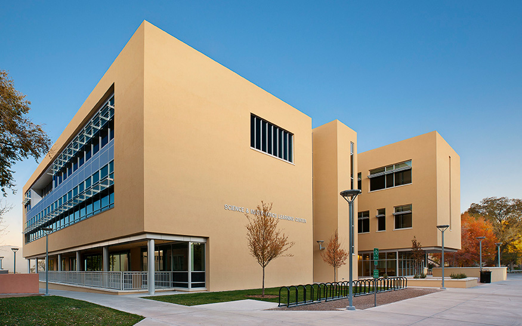

GS SWAM 2026!!!
The inaugural Graduate Student SouthWest Applied Mathematics (GS SWAM) Conference is hosted at the University of New Mexico in Albuquerque, NM and organized by the UNM SIAM student chapter. We invite all graduate students in applied math and related programs from across the southwest (Arizona, Nevada and New Mexico) to register and participate as a speaker, poster presenter, or as audience member. Faculty and other professional staff are also welcome, though all presentations are to be done by students. Registration for all interested parties is free. Register for the conference using this registration form.
Conference Location and Dates
The conference will take place at the UNM Science and Math Learning Center and will formally begin Saturday, October 31st at 8 AM and end Sunday, November 1st at 1 PM. Informal social gatherings will be organized for the nights of October 30th and October 31st for all those who wish to attend. Halloween costumes are encouraged (spooky!).

The UNM SIAM Student Chapter
GS SWAM 2026 is the product of hardwork done by the UNM SIAM student chapter under the guidance of chapter advisor professor Jehanzeb Chaudhary and with the support of Dr. Danny Dunlavy and the Southwest section of SIAM.
The spirit of SWAM is to celebrate the work done by graduate students and connect us beyond our home institutions. We hope that this event may be built up on the years across other institutions in the
southwest.
Chief organizer:
Jose Agudelo Vélez (Officer)
Scientific committee:
Adrian Ruiz Vasquez (Officer)
Umair Ali Wani (President)
Organizing committee:
Dane Laufer (Officer)
Michael Brown (Secretary)
Md Al Amin Molla (Vice President)
Outreach committee:
Mimi Nguyen (Treasurer)
José García (Officer)
Chapter faculty advisor:
Professor Jehanzeb Chaudhary
Please note you do not need to be a member of SIAM to attend this event, though you are encouraged to join!
The Southwest Sectional Meeting
The first SIAM Southwest sectional meeting will be held April 2-3, 2027, at the University of Nevada Las Vegas. We encourage all SWAM participants to attend that conference as well. We hope to see you there!